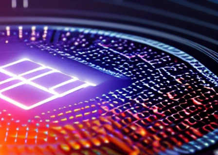
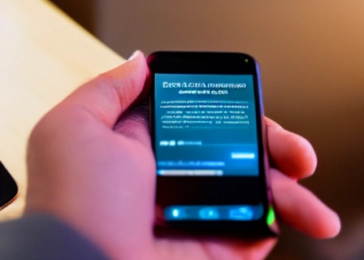
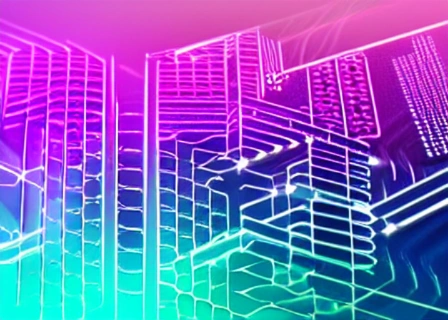

The Digital Dollar Blockchain Corporation (DDBC) is rewriting the narrative of financial technology, pioneering an integration with the Cosmos universe. Our cutting-edge blockchain, crafted for optimum security, lucidity, and ease of access, revolutionizes digital currency transactions, making them as simple as sending a text. Our primary offering, the Digital Dollar (DD), offers the constancy of the USD within the digital world, redefining the dynamics of digital currencies. Experience the evolution of finance, amplified by DDBC in synergy with Cosmos.
The Digital Dollar Blockchain Corporation (DDBC) offers an entirely open-market platform, distinguished by its unique benefits. An important feature is that no tokens are owned by the platform proprietors. This ensures that the value of each digital dollar token (DD) is governed by the decisions and activities of users within the marketplace, devoid of influence from a concentrated ownership group. Each DD reflects the economic activities of its users, safeguarded against manipulation.
Our non-profit status further differentiates us, positioning us to serve the common user. Our principal motivation is facilitating secure, effective, and fair transactions for all, rather than chasing profits. This democratization of financial services promotes wider user participation, enhancing the strength and flexibility of our platform.
Our native token, Karma, introduces a groundbreaking method of managing transaction fees, popularly known as 'gas fees'. Rather than accruing costs with each transaction, users earn Karma points, which are used to cover transaction fees. This innovative model removes the deterrent of transaction costs, enabling free participation in economic activities. This feature particularly benefits those engaging in micro-transactions, who would otherwise be significantly impeded by gas fees.
Additionally, our partnership with Cosmos facilitates interoperability across multiple blockchains, providing users a seamless experience. This feature offers users the flexibility to transact across different ecosystems with ease. Further, the association with Cosmos provides an additional security layer, safeguarding the integrity of user transactions.
Moreover, DDBC's strict observance of regulatory compliance, transparency, and meticulous approval processes means users can trust the platform and feel assured about the safety of their transactions. This assurance is invaluable in the digital currency sphere, where trust is often a significant hurdle for potential users.
In striving to create a secure and transparent digital currency ecosystem, we comply with rigorous operational guidelines, enriched by our connection to Cosmos:
Digital Dollar (DD)
The DD is a digital asset uniting the stability of the US Dollar with the prowess of blockchain technology, supported by Cosmos. Fully collateralized and backed 1:1 with USD, DD promises stability and transparency, offering users a dependable, secure, and convenient digital currency. The Digital Dollar Funds are never overleveraged, and public API access to the Corporate Bank account assures that the Fiat Balance matches the Digital Dollar total supply at all times.
Karma
Alongside DD, we also employ Karma, a native token without monetary value, linked to the Cosmos network. It cannot be bought, sold, or transferred, but rewards participants contributing to the platform. It serves as a transaction fee and grants VIP access to certain benefits within our ecosystem, while also enjoying the advanced token features of Cosmos.
Auditor Rewards
To maintain the highest standards, we provide auditors and review committee members with a portion of contract revenues, further fortified by Cosmos' robust infrastructure. In case of contract failure, penalties apply, motivating meticulous review and oversight.